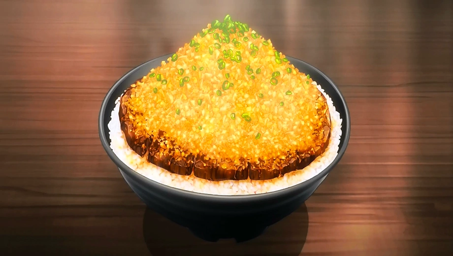

Yukihira Style Chaliapin Steak Don

Description
A tenderized sliced steak covered in a mountain of caramalized onion, atop some steaming rice.
Ingredients
- Steak (flank or sirloin)
- Onions (finely diced)
- Rice
- Umeboshi Paste
- Spring Onion (finely sliced)
- Red Wine
- Soy Sauce
- Butter
- Starch (mixed with water)
Method
- Score and (if thick) hit steak with a tenderizer, then cover the steak with the diced onion. Rest for 30 mins, then remove the onions and season.
- Fry the onion with butter until begins to reach golden brown, season with salt, then set aside.
- Fry the steak with more butter in the same pan then remove and slice (against the grain).
- Deglaze the pan with red wine and add the onions from earlier, then add soy sauce and the starch, continue to cook.
- Pour some sauce over the rice, top with the steak slices then cover it with the onions and remaining sauce. Garnish with some spring onion.